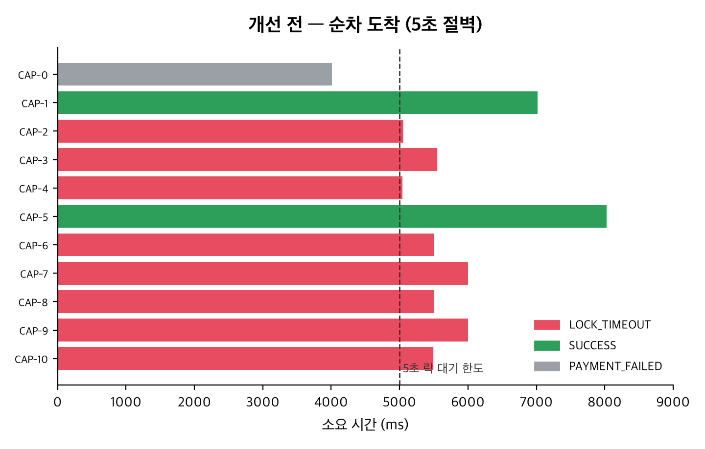
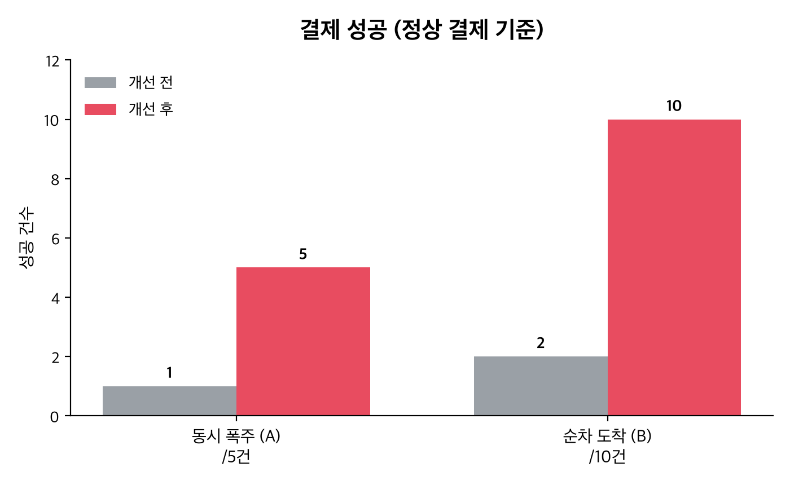
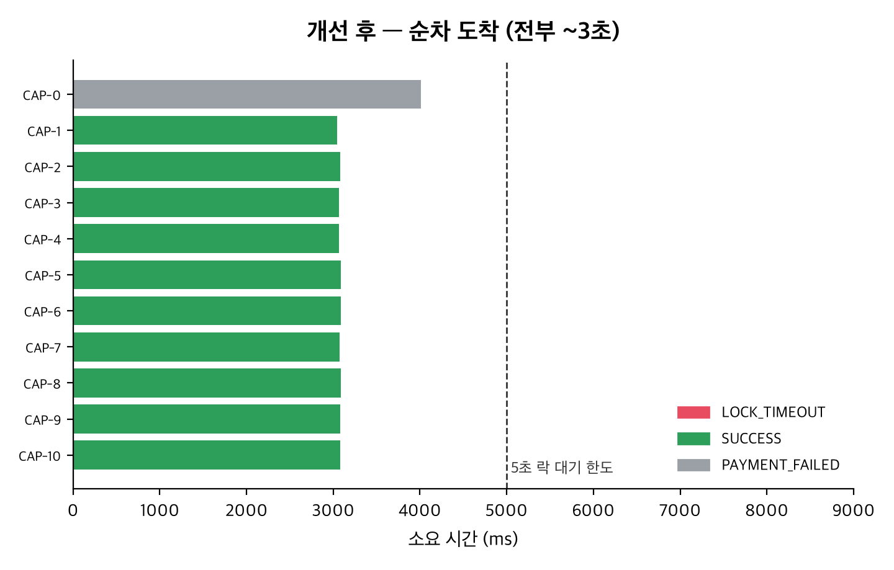

AirDnD
EXPLAIN과 부하 테스트로 풀어낸 성능 최적화 사례
아키텍처 & 도메인
검색
왜 7초가 걸렸나 — 그리고 어떻게 ms로 줄였나
"100만 중 1개 검색이 7초"
사실 여러 문제가 쌓여 있었다
비-sargable LIKE
region 검색이 LIKE '%term%' + lower() → B-tree 인덱스를 못 탐
region 인덱스가 없었다
유일한 선별 필터인데 인덱스 자체가 없어 매 검색이 ~1M행 스캔
ORDER BY id … LIMIT
MySQL을 PK 워크로 유도 → 매칭이 희소하면 사실상 전체 스캔
1D 인덱스로는 2D 문제를 못 푼다
POINT + R-tree SPATIAL
위·경도를 공간 컬럼으로 묶고 공간 인덱스 적용 V9 → V10
SRID 0 제약 필수
컬럼을 SRID 0으로 제약해야 MySQL이 공간 인덱스를 사용
술어는 bare로 emit
MBRContains(...)=1로 감싸면 옵티마이저가 못 봄 → 그냥 풀스캔
검색 응답이 밀리초 단위로
실제 EXPLAIN & 한 줄 QueryDSL 차이
전역 힌트는 답이 아니었다
빈 / 희소 박스 → ms
ORDER BY id+0 트릭으로 인덱스를 강제 → 빈 바다 패닝이 밀리초로 개선
밀집 박스 → 1~2s
줌아웃한 밀집 영역이 filesort로 오히려 느려짐 → 되돌림
plain-PK와 filesort는 정반대 병리 — 전역 ORDER BY 하나로는 둘 다 이길 수 없다.
박스 크기 · 예상 행 수에 따라 접근 경로를 고르는 적응형. 멋진 힌트가 아니라 올바른 진단.
결제
어떻게 같은 방의 결제 전부를 무너뜨리나
느린 결제 1건이 같은 방 결제를 "실패"시킨다
락을 쥔 채 외부 호출
capture()가 Room 락(FOR UPDATE)을 쥔 채 동기 PayPal 호출을 끝까지 대기
락 유지(≤10s) > InnoDB 락 대기(5s) → 대기가 아니라 실패

PayPal 호출을 락 밖으로
CAPTURING 마킹 → 커밋과 함께 락 해제CAPTURED + 이벤트이중예약을 막는 건 Room 락이 아니라 PENDING 홀드 — 락을 풀어도 슬롯은 선점됨.

5초 절벽이 사라졌다

Redis 없이 — 이벤트 기반 + SSE
락을 ms로 줄임 → 분산락(Redis) 불필요. TTL 락은 capture 중 만료 시 오히려 이중과금 위험.
이벤트만 발행
도메인은 ApplicationEventPublisher로 발행 → 알림 모듈이 구독
AFTER_COMMIT + @Async
롤백 시 오발송 차단 · 예약 응답 비지연 · 백프레셔로 유실 방지
SSE
회원별 연결 관리 + 30초 heartbeat로 죽은 연결 정리(메모리 누수 방지)
운영
코드로 만든 인프라 · 관측 · 검증
코드로 만든 인프라 · 관측 · 검증
Terraform
EC2 · MySQL · CloudFront · S3 · ECR · IAM(OIDC) · SSM 전부 코드화
GitHub Actions
OIDC 키리스 배포 → ECR → EC2. Flyway V1~V11 스키마 버전 관리
Prometheus + Grafana
mysqld-exporter · bottleneck-triage 대시보드로 병목을 측정
k6 → OOM 대응
실제 검색 패턴 재현. t4g.micro OOM → t4g.small 리사이즈
1GB·swap 0 박스가 부하 중 OOM-killer로 mysqld·SSM까지 죽어 wedge → reboot 복구(데이터는 별도 EBS) 후 스케일업.
배운 점 — 진단이 핵심
측정으로 발견했다
두 병목 모두 추측이 아니라 EXPLAIN · 부하 테스트 · 대시보드로 찾았다.
도구 추가가 아닌 트레이드오프 이해
검색은 전역 인덱스 힌트를 되돌리고 적응형으로 / 결제·알림은 Redis를 도입하지 않음.